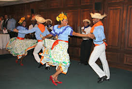
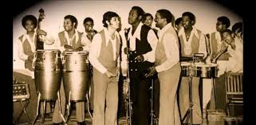
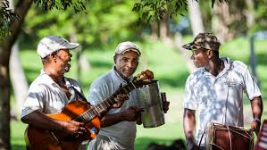
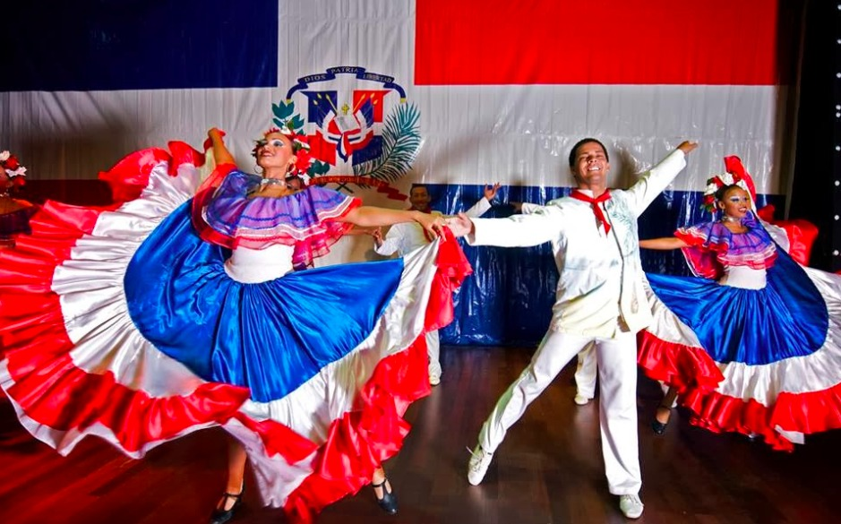
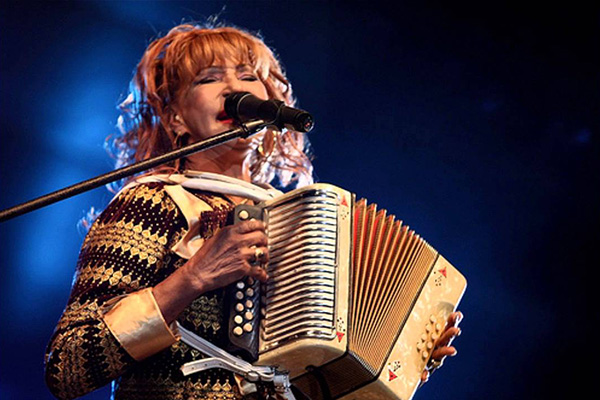
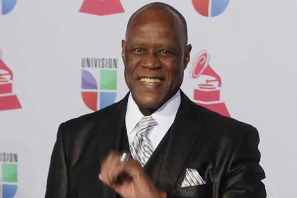
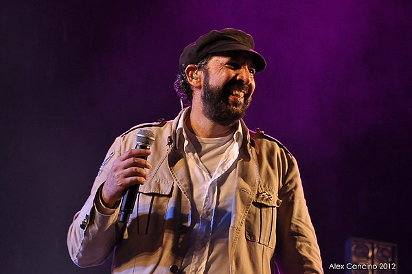

El merengue es un tipo de música y danza que se originó en República Dominicana, y que se ha convertido en un estilo muy popular en toda América Latina. Este género tiene un ritmo moderado a muy rápido, y es interpretado con la güira, la tambora y el acordeón.
El merengue tiene tres pasos o movimientos básicos; un paso lateral, uno hacia delante y otro hacia detrás. Por ello, es un baile fácil y divertido de aprender, lo que hace que se haya convertido en una danza tan popular.
Los estilos del merengue.
El merengue es considerado la música nacional de República Dominicana y hoy en día se tocan tres tipos principales de merengues en el país. Aunque son similares, se distinguen por su instrumentación y repertorio.
Perico Ripiao; el merengue típico.
Merengue de Orquesta.
Merengue de guitarra.
Merengue tipico o ripiao

El Merengue Perico Ripiao es el merengue más típico de República Dominicana. Es el más antiguo y aún se continúa tocando.
Este surgió en la región del valle llamada el Cibao, cerca de la ciudad de Santiago de los Caballeros, una región rural y agrícola, por lo que es llamada la “música del campo” de República Dominicana.Este estilo musical se toca con tres instrumentos principalmente: la güira, la tambora y el acordeón.
La güira y la tambora, los dos instrumentos principales de percusión, fueron parte del conjunto desde el principio de la música, y son tan importantes que se consideran símbolos del país.
La güira es una rascadora de metal que se cree que es de origen nativo Taíno, mientras que la tambora es un tambor de dos cabezas de origen africano. El acordeón fue una herencia europea de finales del siglo XIX.
De esta manera, los tres instrumentos que se utilizan representan la fusión de las tres culturas que forman la dominicana: la influencia africana por la tambora, la taína por la güira y, como ya hemos comentado, la europea por el acordeón.
Merengue de orquesta

El merengue de orquesta o de big band se popularizó entre las clases altas y medias dominicanas en el siglo XX.
Aunque el merengue era interpretado en salones de clase alta en la década de 1850, los “moralistas”, como el entonces presidente Ulises Espaillat, consiguieron prohibir el baile en dichos lugares solo dos décadas después provocando la extinción del merengue en las ciudades.
No obstante, cuando Rafael Leonidas Trujillo tomó poder en 1930, impuso el merengue en todos los niveles de la sociedad, algunos dicen que como una forma de castigo para las élites que se habían negado a aceptarlo anteriormente.
El primer merengue que obtuvo éxito en todos los niveles de la sociedad fue la famosa composición de Alberti del año 1936: «Compadre Pedro Juan.»
Después del asesinato de Trujillo en 1961, el merengue de orquesta sufrió un gran cambio. Durante esa década, el Combo Show de Johnny Ventura volvió “locas” a multitudes con sus ostentosas coreografías; además, redujeron la sección de la trompeta y las influencias de salsa.
Merengue de guitarra

Es un tipo de merengue cuya principal instrumentalización consiste en la guitarra española como instrumento melódico, además de la güira, la tambora y demás instrumentos del merengue típico como acompañamiento.
Guarda una relación cercana con la bachata y algunos de sus más grandes exponentes también fueron muy conocidos por sus interpretaciones en ese otro género dominicano.
Origen del Merengue

El Merengue es un baile y género musical originario de la República Dominicana, que se desarrolló a mediados del siglo XIX. Es muy popular en todo el continente americano, donde es considerado, junto con la salsa, como uno de los grandes géneros musicales bailables que identifican al hispanoamericano.
Orígenes
Se originó en el norte de la Republica Dominicana.
Los primeros merengues se tocaban con instrumentos de cuerda, como la guitarra o la bandurria. Años más tarde, los instrumentos de cuerda fueron sustituidos por el acordeón, conformándose así, junto con la güira y la tambora, la estructura instrumental del conjunto del merengue típico. Este conjunto, con sus tres instrumentos, representa la sinfonía de las tres culturas que conformaron la idiosincrasia de la cultura dominicana.
El acordeón llegó a la isla en la década de 1880, y se convirtió en el instrumento principal del merengue.
En algunas zonas de la República Dominicana, en especial en el Cibao y en la subregión Noroeste, hay todavía conjuntos típicos con características similares a aquellos pioneros, este ritmo fue evolucionando durante todo el siglo XX.
Primero, con la introducción de nuevos instrumentos.
Influencias
Se originó a partir de la contradanza española, el areíto taíno y las notas africanas.
La influencia europea viene a estar representada por el acordeón, la africana por la tambora dominicana, que es un tambor de dos parches, y la taína o aborigen por la güira.
El merengue se ha modernizado con influencias internacionales, como el rock and roll estadounidense.
Evolucion del Merengue:
Los años 30:
Durante la década de 1930, el merengue continuó su evolución, incorporando nuevos elementos musicales y líricos. Algunos de los principales artistas de esta época incluyen a Joseíto Mateo, quien se convirtió en una figura icónica del merengue, y Luis Kalaff, quien popularizó la «orquesta típica» de merengue, caracterizada por el uso de acordeones, güiros y tamboras.
Los años 40:
En la década de 1940, el merengue comenzó a ganar popularidad fuera de la República Dominicana, en países como Puerto Rico y Cuba. Algunos de los artistas más destacados de esta época incluyen a Luis Alberti, Juanita y Alicia Santos, Fefita La Grande y Joseíto Fernández.
Los años 50:
En la década de 1950, el merengue se convirtió en una forma de música comercialmente viable, gracias a la creciente industria de la música en la República Dominicana y la popularidad de los artistas como Johnny Ventura, Wilfrido Vargas, Joseíto Mateo y Cuco Valoy. La música de merengue comenzó a ser difundida a través de la radio y la televisión, lo que ayudó a expandir su alcance a nivel internacional.

Fefita La Grande.

Johnny Ventura.
Los años 60 y 70:
Durante las décadas de 1960 y 1970, el merengue continuó su expansión a nivel internacional, especialmente en países como Puerto Rico, Venezuela y Colombia. Algunos de los artistas más destacados de esta época incluyen a Johnny Ventura, quien se convirtió en uno de los más populares y reconocidos intérpretes de merengue, así como a Wilfrido Vargas, Sergio Vargas, Cuco Valoy y Fernando Villalona.
Los años 80 y 90:
Durante los años 80 y 90, el merengue se fusionó con otros géneros, como la salsa y el rock, dando lugar a nuevos subgéneros como el merenhouse y el merengue de calle. Artistas como Juan Luis Guerra, Olga Tañón, Elvis Crespo, Milly Quezada y Los Hermanos Rosario también se hicieron populares durante este tiempo, llevando el merengue a audiencias más amplias y ganando reconocimiento internacional.
A finales de los años 90, el merengue comenzó a perder popularidad en favor de otros géneros como el reggaetón y la bachata, aunque sigue siendo una parte importante de la identidad cultural de la República Dominicana y continúa siendo interpretado y disfrutado por muchos en todo el mundo.

Juan Luis Guerra.
Actualidad:
Durante las últimas dos décadas, el merengue ha experimentado altibajos en popularidad, pero ha mantenido su presencia en la escena musical de la República Dominicana y otros países de habla hispana. Algunos de los exponentes más destacados de esta época incluyen a Johnny Ventura, quien siguió siendo un referente en el género hasta su fallecimiento en 2021, y a artistas como Eddy Herrera, Elvis Crespo,Rubi Perez,Milly Quesada, Sergio Vargas y Juan Luis Guerra, quienes han continuado su carrera y producido música que ha sido bien recibida por el público.
En los últimos años, algunos artistas jóvenes han surgido en el género, como el sujeto, El Cata, Omega el fuerte,Tulile, Julian oro duro y Silvio Mora.
También ha habido un resurgimiento del merengue tradicional, gracias a artistas como Miriam Cruz y José Peña Suazo, quienes han llevado a cabo una «reinvención» del género, combinando elementos modernos con la esencia del merengue clásico.
Grupos Musicales del Merengue
Alex Bueno:
Alejandro Wigberto Bueno López (San José de las Matas; 6 de septiembre de 1963), conocido artísticamente como Álex Bueno, es un cantante dominicano..
Ramon Orlando:
Ramón Orlando Valoy (Santo Domingo; 29 de julio de 1959) es un cantautor, músico, arreglista y productor musical dominicano pionero en la internacionalización del género merengue..
Cuco:
Cuco Valoy (Manoguayabo, Santo Domingo, República Dominicana, 6 de enero de 1937) es un músico y cantante dominicano. Valoy fue integrante del dúo Los Ahijados desde la década del 1950 hasta finales de la década del 1960..
Wilfrido Vargas:
Wilfrido Radhamés Vargas Martínez es un director de orquesta, trompetista y cantante dominicano de merengue. Con éxitos como El comején y Abusadora, popularizó el género en América Latina y Europa. Su orquesta fue cuna de talentos como Sergio Vargas y Las Chicas del Can.
Chichi Peralta:
Pedro René Peralta Soto es un músico cantante y productor dominicano de merengue y bachata.
Eddy Herrera:
Edith José Herrera de los Ríos más conocido como Eddy Herrera, es un cantante dominicano de merengue y ritmos caribeños, conocido como “El galán del merengue”.
Hermanos Rosarios:
Este emblemático grupo, liderado por Rafa Rosario, es sinónimo de alegría y ritmo. Tony, Luis y Rafa Rosario forman Los Hermanos Rosario.
Con éxitos como La dueña del swing y Rompecintura, han sido embajadores del merengue en escenarios internacionales.
Bonny Cepeda:
Reconocido como uno de los primeros en fusionar el merengue con toques más modernos y electrónicos, Bonny Cepeda se ha destacado con éxitos como Asesina, llevando el merengue a nuevas audiencias..
Grupo
Popular grupo de merengue de Puerto Rico de la década de los 90´s. El grupo fue formado por los hermanos Héctor y Oscar Serrano junto con Edwin Serrano y Alfred Cotto.
Toño Rosario:
Máximo Antonio del Rosario Almonte, más conocido como Toño Rosario (Higüey; 3 de noviembre de 1955), es un cantante dominicano de merengue..
Rasputin :
El afamado merenguero July Mateo, conocido como Rasputin, nace un 23 de septiembre de 1955 en Hato Mayor. Fue un popular músico dominicano, trompetista, arreglista y director de orquesta..
Johnny Ventura:
También conocido como “El Caballero Mayor” es cantante de merengue dominicano muy populares durante las décadas 60, 70, y 80. Revolucionó el merengue al incorporar instrumentos modernos y una puesta en escena vibrante. Su energía y carisma lo convirtieron en un referente del género, dejando un legado imborrable tras su partida en 2021
Juan Luis Guerra:
Juan Luis Guerra Seijas es el maestro de la fusión y la poesía musical, Juan Luis Guerra, elevó el merengue a una categoría mundial con temas como Ojalá que llueva café y La bilirrubina. Su impecable estilo ha sido reconocido con múltiples premios Grammy y su influencia trasciende generaciones .
Fernando Villalona:
Ramón Fernando Villalona Évora, (Montecristi; 7 de mayo de 1955), más conocido como Fernandito Villalona, y apodado como "El Mayimbe", es un cantante dominicano. Aunque originalmente se dio a conocer con los géneros balada y bolero, Villalona ha incursionado exitosamente en géneros como merengue, bachata y últimamente en la música cristiana.[
Las Chicas del Can:
Agrupación dominicana de merengue caracterizada por ser exclusivamente femenina. Fue formada en el año 1981.
Luis Alberti:
Fue un músico y autor de reconocidas canciones de merengue tales como Compadre Pedro Juan.
Milly Quezada:
La reina indiscutible del merengue, Milly Quezada, rompió barreras como líder femenina en un género dominado por hombres.«La Reina del Merengue».
Canciones como Volvió Juanita y Entre tu cuerpo y el mío son himnos que resuenan en cada fiesta dominicana.
Olga Tañón:
Olga Teresa Tañón Ortiz es una cantante puertorriqueña de merengue y pop latino conocida como “La Mujer de Fuego”.
Proyecto Uno:
Proyecto Uno es una agrupación musical estadounidense de origen dominicano conocido por su estilo merenhouse (fusión de merengue y house)..
Joseito Mateo:
Joseíto Mateo (Santo Domingo, 6 de abril de 1920-Ib., 31 de mayo de 2018) fue un consagrado merenguero dominicano que empezó su carrera en los años 1930. Apodado El Rey del Merengue, Joseíto Mateo fue pionero del género y uno de los responsables de su internacionalización.
Sergio Vargas:
Sergio Pascual Vargas Parra es un cantante de merengue y bolero dominicano, quien fuera muy popular en las décadas 80 y 90.
Rubby Pérez:
Roberto Antonio Pérez Herrera es un cantante dominicano de merengue conocido como «La voz más alta del merengue».
Wilfrido Vargas:
Wilfrido Radhamés Vargas Martínez es un director de orquesta, trompetista y cantante dominicano de merengue.